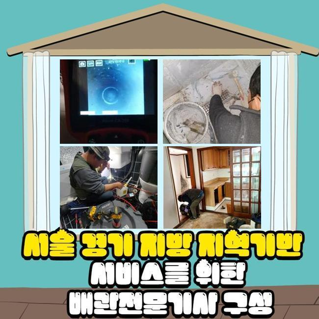
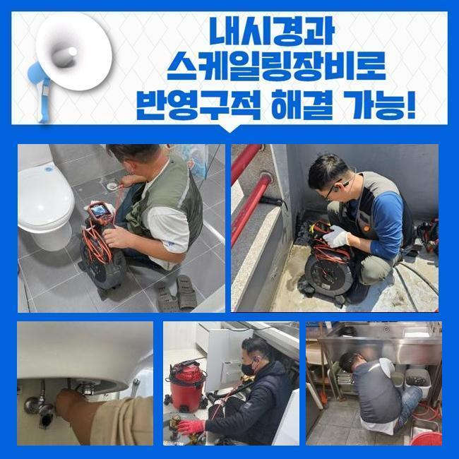
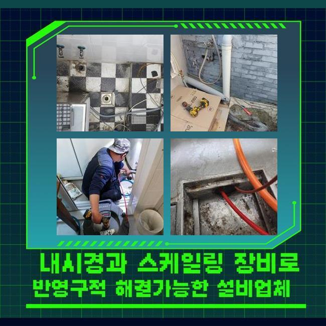
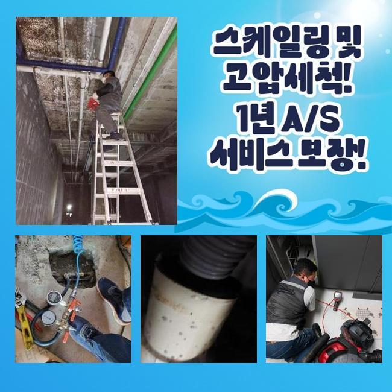
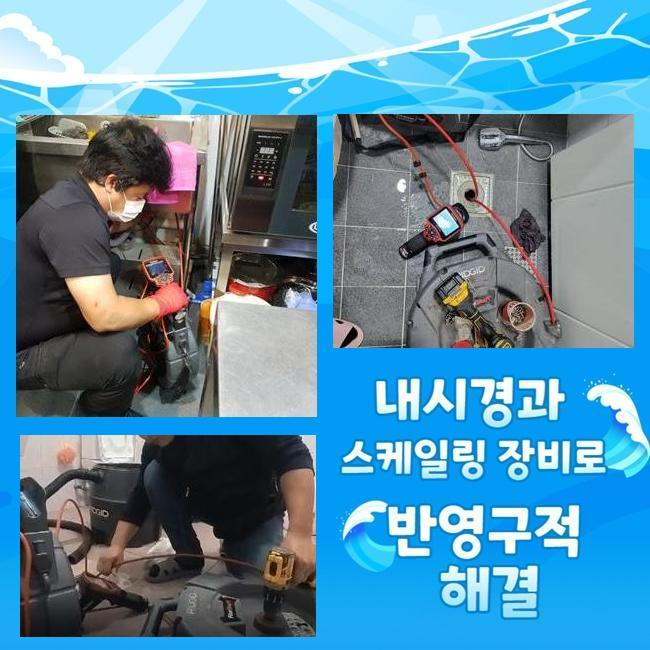
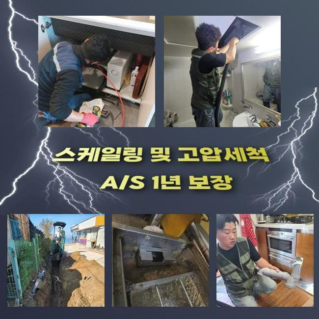
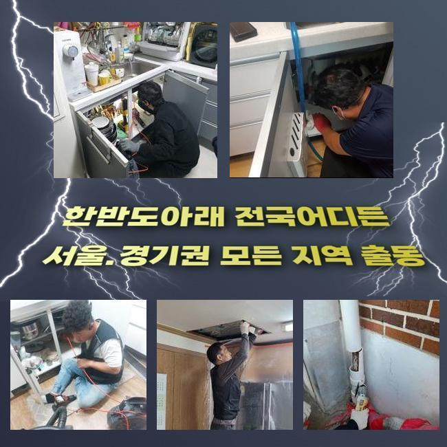

🏠 중구 명동씽크대배수구역류 신당동 횡주관청소 배관뚫는업체
용인시 처인구 배관막힘 전문 시공 후기

📋 작업 개요
- 위치: 용인시 처인구, 수원시 영통구, 화성시 동탄
- 서비스 유형: 배관막힘, 고압세척, 내시경점검
- 작업 일시:
- 업체명: 하수구수사대 (010-5615-2118)
🔍 문제 상황
중구 명동씽크대배수구역류 신당동 횡주관청소 배관뚫는업체
최근 맨홀과 연결된 관로에서 역류피해가 나타나게되어 의뢰를 해주셨는데요
증상만 들어봐도 해결이 시급하다고 판단해 신속히 달려가 진단을 이행해보니 구축 주거지에서 발생된 배수장애로 증세들이 심상치않을것을 볼 수 있었어요
먼저 내시경기기로 각 라인을 자세하게 조사해보니 이런저런 슬러지들이 메인관에 자리한것을 확인해주었습니다
해당 문제로 냄새들도 함께 불거진 상황을 보았습니다
부차적인 증상이 나타났다는 사실로 볼 때 오랫동안 오염물을 방치해 나타난 모습이였죠
전체적인 컨디션을 살피니 구간마다 잔해가 쌓여 막히는 증상이 발생된 것으로 예측했지만 정확한 진단을 하고자 내시경기기를 이용해보기로 했어요

🔎 원인 분석
💡 전문가 진단: 정밀 진단 장비를 사용하여 슬러지의 고착 여부를 판명하고 타격/세척 작업을 실시했습니다.
내시경기기로 하수도를 관찰했더니 군데군데 이물들이 존재하고 있었습니다
돌과 같이 고착화된 이물들은 샤프트기계를 이용하는것이 좋겠지만 집수시설과 연결된 구조였고 흡착된 오염물이 많았기에 고수압의 기계를 사용해보았는데요
고압노즐분사로 관로를 작업해주는 절차에선 구간별로 누적된 슬러지들을 세척하기에 이르렀죠
일반적으로 간단하게 막혀버리는 문제들에 이용되는 기계라기보단 집수정이나 샤프트장비를 사용해도 크게 달라지지 않을 때 쓰여지는 장비인데요
해당 세척 점검을 이어나갈 때에는 매립 위치와 특수성들을 염두에 두고 구간별로 알맞은 세기를 가하는 것이 중요하답니다
그 까닭은 고압수장비들을 집 내부측의 이물이나 내구성이 약한 배수관에 쏴주면 파손이슈의 결함들을 떠안아야하고 또는 경제적인 부담들도 커지기 쉽상이기에 판단력이 중요할 수 밖에 없습니다
고압노즐 사용은 고압의 물로서 배관들을 작업하는 과정들로서 출수지점에서 선제적으로 이행했죠
더 나아가 엘보쪽과 벽쪽은 상당량의 잔해물들이 잔존해있던 상태였어요

🔧 작업 과정
그러므로 이같은 작업을 할 땐 여지껏이 걸릴수도 있으나 계속하여 진행시켜 효율적인 배관컨디션을 만들었죠
혹여 배수관에 슬러지가 고착화된 상황일 때에는 고압노즐분사로 꼼꼼하게 청소시키는게 합리적인 방법이랍니다
적합한 조치없이는 더이상의 막힘이 생겨날 수 있어 그에 따른 조치들이 필요하겠습니다
이후에 하수도를 내시경으로 파악함과 동시에 여타 문제요소들을 관찰하기 시작했어요
고착화가 진행된 이물과 일부 탈락되어 부유하는 석회잔재가 제거되지 않아 석션을 꺼내 흡입한 뒤주어 배관컨디션을 복구시켰습니다
그 후로는 구간별로 하수구 배수관을 진단했는데요 해당 사례 장소는 다가구 건물이였고 장기간에 걸쳐 증세들이 야기된 현장이였기에 주변으로도 증세들이 번져있었습니다
진단이 필요한 부위를 검수했습니다
해당 단계까지 종료되고는 더이상의 트러블을 막고자 공용배수관 내식성의 검수들도 이행했죠
각 관로의 청소를 위한 하수구의 청소의 경우 주기적으로 진행하여 하수구의 사용기간을 보장하고 솟구치는 증상이나 물샘의 오류들을 막을 수 있어요
내시경장치는 배수관을 파악케하는 전문기계로 원인들을 관찰할 때 꼭 있어야 하겠습니다
하수관이 막히게되어 조치를 취할 전문진을 선별할 때 고객님들께서 살펴보실 항목은 내시경을 구비해놓았는지 유무와 관련해서 1차적으로 보시는게 좋겠습니다
추후에 고압수의 막히는 증상이 발생된다면 서둘러 내방해서 문제의 구간을 조치할게요


✅ 작업 완료
흡입기기와 샤프트기기 스프링기기까지 이용하여 슬러지들을 세척하고 고압수청소로 작업들을 수행해요
작업할 때 생겨나는 이물은 고압노즐분사로 세척을 진행시키고 철수 이전까지 의뢰자의 주거지 등에서 야기된 하수구막힘을 정확하게 바로 잡습니다
겉에 존재하는 이물질들을 싹 청소한 뒤 고객의 편의들을 고려해 하수시스템들을 오랜 시간 유지하도록 지원합니다




⚠️ 하수구 배관 막힘 예방 및 관리 가이드
- ✅ 머리카락, 비닐, 물티슈 등 물에 분해되지 않는 이물질은 절대 흘려보내지 마세요.
- ✅ 기름기 많은 식기는 설거지 전 키친타올로 먼저 기름때를 닦아내세요.
- ✅ 주기적으로 배수구에 뜨거운 물을 가득 부어주어 유지방 고착을 방지하세요.
- ✅ 작업 후 1년 이내 재발 시 무상 A/S 보증 서비스를 제공합니다.
💡 핵심 정리
- 확실한 장비 작업(내시경 점검 및 샤프트 스케일링)으로 원인을 뿌리 뽑습니다.
- 작업 후 1년 이내에 동일한 부위 재발 시 100% 무상 A/S 서비스를 보장합니다.
- 서울 · 경기 · 인천 전 지역에 24시간 언제든 긴급 출동할 수 있도록 항시 대기 중입니다.
❓ 자주 묻는 질문 (FAQ)
🚨 용인시 처인구 배관막힘 문제로 고민이신가요?
정확한 원인 진단과 확실한 시공으로 재발 없는 해결을 약속드립니다.
24시간 긴급 출동 | 서울 · 경기 · 인천 전지역 | 1년 내 재발 시 무상 A/S